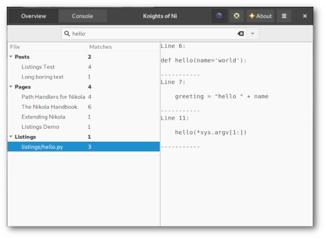

NoN: v0.7 release
Search and Popovers
The latest release of my GTK+ client for Nikola features a brand-new search function and some GUI enhancements.

NEW: search function
This is quite self-explanatory: you can find strings in posts, pages and listings.
NEW: Popovers
All menus and context menus are GtkPopovers or GtkPopoverMenus now to follow the guidelines and for a better desktop integration. Popovers do not extend the main window's dimensions like menus sometimes do. They look better as they are larger and point to their parent widget/origin (so right-click context menus do not appear kind of 'lost' on the screen anymore).


There is also a new Popover hiding behind the "Status" button which displays the output of nikola status.
This helps to show and resolve errors and warnings which may occur p.e. due to Nikola upgrade.

Changelog
-
Fixes:
- all issues regarding non-flat file structure
- get paths and extensions for posts and pages from conf.py so files are shown that are stored aside from the default folder structure
- remove tags/categories with zero occurences
- quit preview if other menu items are clicked
- return from console to main window after command execution is done
-
New:
- search function: find strings in posts, pages and listings
- menu button to open application config file
-
Updates:
- all menus are Popovers/PopoverMenus now
- localization strings
- screenshots